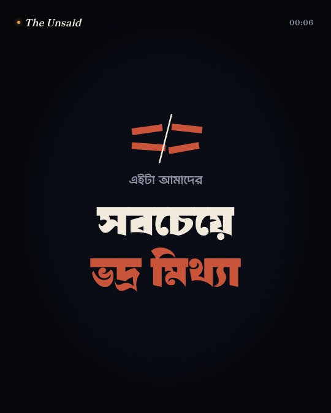
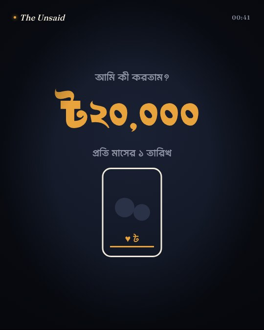
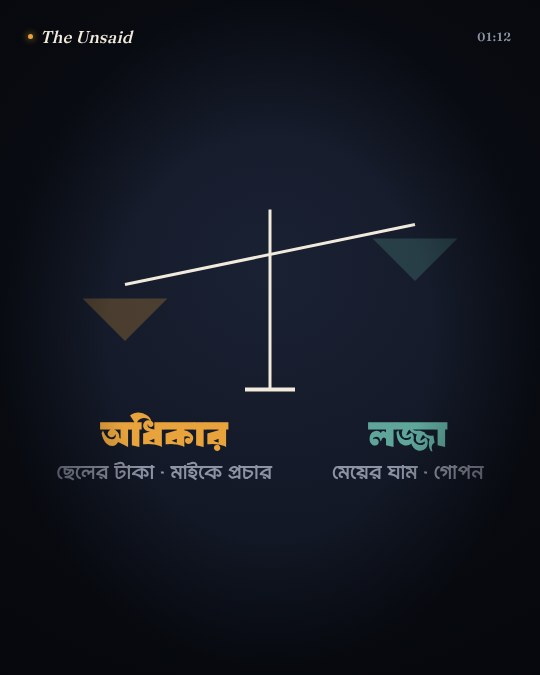
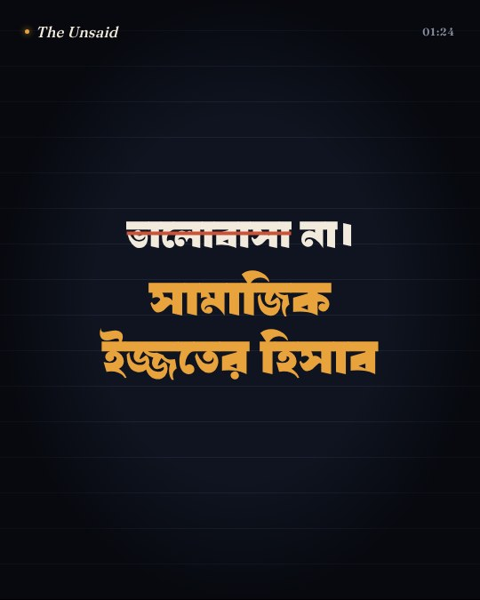
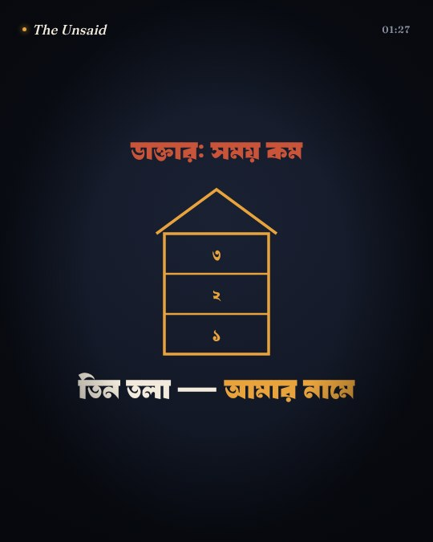
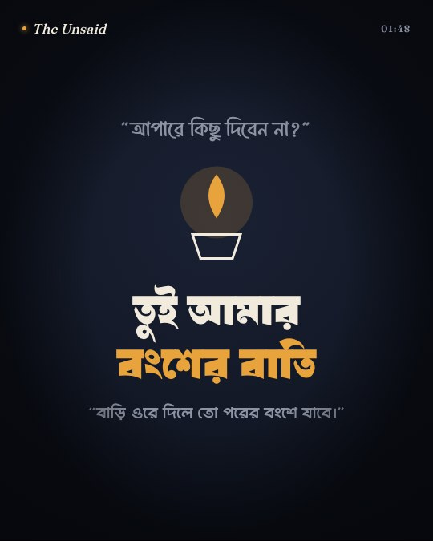
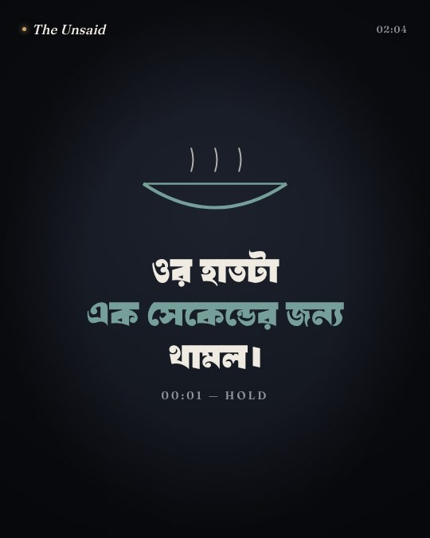
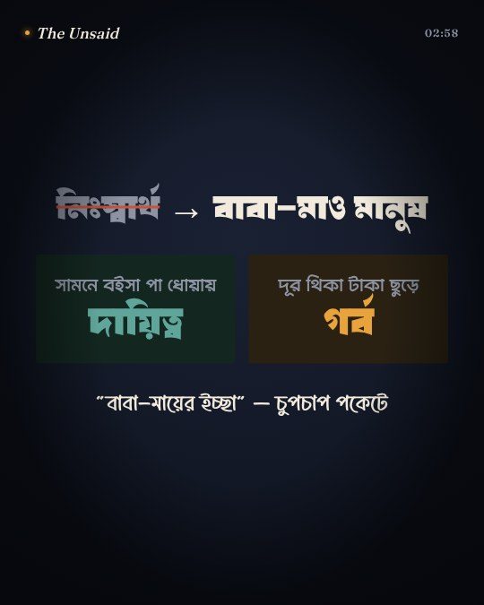
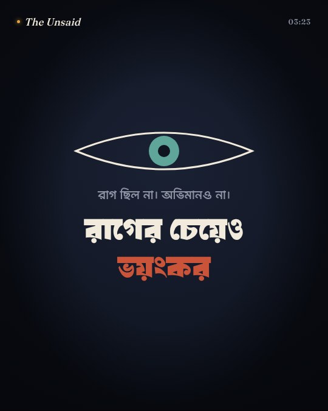

স্টোরিবোর্ড · ভয়েসওভার ৩:৪৫ · ১৮টা সিন
The Unsaid
“বাবা-মা নাকি সব সন্তানরে সমান ভালোবাসে” — ভয়েসওভারের জন্য মোশন গ্রাফিক্সের পরিকল্পনা। প্রতিটা ফ্রেম আসল ফন্ট দিয়ে বানানো স্টাইল-ফ্রেম; ফাইনাল ভিডিওতে এগুলো অ্যানিমেটেড হবে। টাইমকোড আনুমানিক, বানানোর সময় শব্দ ধরে ধরে মেলানো হবে।
ফরম্যাট1080×1350 (4:5), 30 fps, MP4
ব্র্যান্ড“The Unsaid” — উপরের বাম কোণায়, সারা ভিডিও জুড়ে; শেষে এন্ড কার্ড
ফন্ট (লিপিঘর)আলিনুর সংবাদপত্র — হুক টেক্সট · আলিনুর তৎসম — সাধারণ লেখা · আলিনুর নক্ষত্র — সংলাপ
টেক্সট স্টাইলসাবটাইটেল না; প্রতিটা লাইনের মূল শব্দগুলো কিনেটিক হুক টেক্সট হিসেবে আসবে
অডিওআপনার ভয়েসওভার + নিজে বানানো সাউন্ড ইফেক্ট ও নিচু ড্রোন/পিয়ানো স্কোর, -14 LUFS
রঙের মানে (পুরো ভিডিওতে একই থাকবে)
অ্যাম্বার — ছেলে: টাকা, গর্ব, বংশ
টিল — আপা: সেবা, ঘাম, অদৃশ্য শ্রম
রাস্ট — সত্যের আঘাত: মিথ্যা, লোভ
সিন বাই সিন

















অনুমোদনের আগে দেখে নিন
- সিন ১২ (আপার হাত থেমে যাওয়া) হবে ভিডিওর মূল মুহূর্ত: পুরো ফ্রেম আর সব শব্দ ঠিক ১ সেকেন্ড থেমে থাকবে।
- ছবি বা ফুটেজ থাকবে না; সবকিছু লাইন-আর্ট আইকন আর টাইপোগ্রাফি দিয়ে। বাস্তব ছবি বা ইলাস্ট্রেশন লাগলে জানান।
- বিকাশের লোগো ব্যবহার হবে না, শুধু “বিকাশে ৳২০,০০০” লেখা থাকবে।
- রং, ফন্ট, কোনো সিনের আইডিয়া বা ট্রানজিশন বদলাতে চাইলে সিন নম্বর ধরে বলুন।